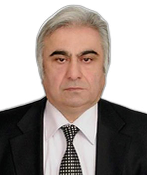

Profil
Eldar Vəliyev Xarkov Milli Bələdiyyə Təsərrüfatı Akademiyasında kadrların hazırlanması və distant təhsil mərkəzinin direktoru, elmlər doktoru və professordur. 1968–1973-cü illərdə Azərbaycan Dövlət Universitetində nəzəri fizika üzrə magistr dərəcəsi alıb. Dissertasiya dairəvi dalğaötürənin sonlu hissəsindən difraksiya şüalanmasıdır. 1977-ci ildə Xarkov Dövlət Universitetində radiofizika üzrə PhD, 1988-ci ildə elmlər doktoru dərəcəsi alıb. PhD elmi rəhbəri V. P. Şestopalovdur. 1988–2008-ci illərdə Ukrayna Milli Elmlər Akademiyasının Radiofizika və Elektronika İnstitutunda aparıcı elmi işçi olub.
İş təcrübəsi
Xarkov Milli Bələdiyyə Təsərrüfatı Akademiyası, Ukrayna
Kadrların hazırlanması, yenidən hazırlanması və distant təhsil mərkəzinin direktoru
- Elmlər doktoru və professor. Vəzifələr cədvəlində illər verilmir
Əsas kimya üzrə Dövlət Elmi-Tədqiqat və Layihə İnstitutu, Ukrayna
2008–February 2012Direktor
Radiofizika və Elektronika İnstitutu, Ukrayna Milli Elmlər Akademiyası, Xarkov
1988–2008Aparıcı elmi işçi
Institute of Radiophysics and Electronics, Kharkiv
1981–1988Böyük elmi işçi
Institute of Radiophysics and Electronics, Kharkiv
1975–1980Kiçik elmi işçi
Təhsil
DSc
1988Radiofizika. Dissertasiya: çoxbucaqlı silindrlərdən və dairəvi və yastı silindrik ekranlardan dalğa difraksiyası
Xarkov Dövlət Universiteti, Ukrayna
PhD
1977Radiofizika. Dissertasiya: yarıqlı dairəvi silindrlər qəfəsindən müstəvi dalğanın difraksiyası. Elmi rəhbər: V. P. Şestopalov
Xarkov Dövlət Universiteti. Təhsil Radiofizika və Elektronika İnstitutunda, 1973–1976
MSc
1968–1973Nəzəri fizika. Dissertasiya: dairəvi dalğaötürənin sonlu hissəsindən difraksiya şüalanması
Azərbaycan Dövlət Universiteti, Bakı
Tədris
- 1979–1980 — Riyazi analiz, analitik həndəsə və kompleks dəyişənlər — Xarkov Aviasiya Mühəndisliyi İnstitutu
- 1992–1995 — Qabaqcıl elektromaqnit dalğa nəzəriyyəsi və qabaqcıl riyaziyyat — Çukurova Universiteti, Adana, Türkiyə
Elmi rəhbərlik
- PhD — 4 — T. M. Ahmedov (1985); V. P. Androsov (1989); R. A. Aliev (1991); M. V. Ivakhnychenko (2008)
Nəşrlər
Rəylənmiş (peer-reviewed) jurnal məqalələri
1. E.I Valiev and V.P Chumachenko. "Semi-inversion method and the method of partial domains in problems of wave diffraction by polygonal cylindrical bodies," Dokl, Series A, 1990, № 1.
2. E.I.Veliev and V.V. Veremey. "Rectangular cylinder in a stationary wave modelling open resonator field." The 3rd Asia-Pacific Microwave Conference Proceedings, Tokyo, Japan, 1990, p.1179.
3. V.N Vavilov, E.I Veliev, V. Veremey and V.P Shestopalov. "An efficient method for solving the problem of wave diffraction on cylindrical screens," ibid, 1990, T. 313, №.5.
4. E.I.Veliev and V.V. Vavilov. "Electromagnetic scattering from complicated cylindrical bodies". Abstracts, XXIII General Assembly of the International union of radio science (URSI), Prague, Czechoslovakia, 1990, v.2, p.388.
5. V.N. Vavilov, E.I.Veliev and V.V. Veremey. "Electromagnetic wave diffraction by complicated cylindrical body". The 3rd Asia-Pacific Microwave Conference Proceedings, Tokyo, Japan, 1990, p.527
6. B.M. Bulgakov, E.I Veliev, V. Veremey, A.M. Fursov and V.P Shestopalov. "The effect of interaction between the fields of open resonance systems with conducting rectangular cylinders," Radio Engineering and Electronics, 1990, T. 60, № 6
7. E.I.Veliev. "Numerical-Analitical methods of solution of Integral equations on two-dimensional diffraction problems". Lecture notes. International school- seminar - Mathematical Methods in Electromagnetic Theory, Gurzuf, USSR,pp. 73-83,1990
8. E.I.Veliev, V.N. Vavilov and V.V.Veremey. "Electromagnetic wave diffraction by cylinder with ogival cross section". Lecture notes. Inter. school-seminar- Math. in Elect. Theory, Gurzuf, USSR, pp.163-167,1990 1991
9. E.I. Veliev. "Numerical-Analytical Approach to Integral Equation of Two- Dimensional Scattering". Lecture notes, International seminar/workshop on Analytical and Numerical Methods in Electromagnetic Wave-Theory, Adana, Turkey, pp.265-274,1991.
10. E.I. Veliev and V.N. Vavilov. "The properties of Wave Scattering by Polygonal Cylinders and Other Resonance Scatterers". Lecture notes, Inter, seminar/workshop on Analy. and Numer. Meth. in Electr. Wave-Theory, Adana, Turkey, pp.274-288,1991.
11. E.I. Veliev and V.N. Vavilov. "The effective method for solution of the problem of diffraction on unclosed cylindrical screen". Proceedings of International Conference on Computation in Electromagnetics, London, UK, pp. 296-300, 8 1991. 1992
12. E.I.Veliev. "Scattering of plane E-polarized wave by a half-plane and structures modelled via its using: new approach to the problem". Proceedings of the 1992 Inter. Symposium on Antennas and Propagation, Sapporo, Japan, pp.233-237,1992.
13. E.I.Veliev and V.N. Vavilov. "The method of the orthogonal polynomials in wave diffraction theory by thin cylindrical screen". Proceedings of ISAP'92, Sapporo, Japan, pp.65-69,1992.
14. E.I.Veliev. "Numerical-Analytical methods in diffraction theory boundary-value problems". Proceedings of Japan National Electromagnetic Theory Meeting, Mikawa, Japan, EMT-92-18,. pp. 23-27,1992. 1993
15. E.I. Veliev and V.V.Veremey. "Numerical-Analytical approach for the solution to the wave scattering by polygonal cylinders and flat strip structures". Analytical and Numerical Methods in Electromagnetic Wave theory, Hashimoto M., Idemen M. and Tretyakov O.A., Eds., Chap.10, Science House, 1993.
16. E.I. Veliev and V.N. Vavilov. "Electromagnetic wave diffraction by cylindrical bodies With Edges", Electromagnetics, 1993, vol.13, No.3.
17. E.I. Veliev, V.V. Veremey, H.Matsushima. "Electromagnetic wave diffraction by conducting flat strips". Trans. IEE Japan, 1993,Vol. 113-A, No.3.
18. E.I. Veliev and T.Ikiz. "Numerical-analytical methods for solving the wave diffraction problem on impedance strip".Abstracts XXIVth General Assembly of the URSI, Kioto, Japan pp.81,1993.
19. E.I. Veliev and T.Ikiz. "Scattering of plane waves by an impedance strip: E-polarization case". Joint ICAA/EESC Conference Proceedings, Torino, Italy, pp. 311-313, 1993. 1995
20. A.A. Chukhlantsev, A.H.Serbest, E.I.Veliev. "Angular and Seasonal Dependencies of the Backscattering coefficients from vegetation at 35 Ghz", Turkish Journal o Physics, vol. 19, no.8, pp.970-975, 1995. 1996
21. E.I. Veliev and A. Oksasoglu. "Bessel functions series in two dimensional diffraction problems", Journal of Electromagnetic Waves and Applications, vol. 10,No.4, pp.493-507,1996.
22. E.I. Veliev, K.Kobayshi, T.Ikiz and Sh. Koshikawa "Plane Wave Diffraction by a Resistive Strip", Proceedings of 1996 International Conference on MMET, Kharkov, Ukraine, pp. 354 – 357. 1997
23. E.I. Veliev, K.Kobayashi, T.Toda and Sh. Koshikawa. "Analytical- Numerical Approach for the Solution of the Diffraction by a Thin Dielectric Strip" Proceedings of the 1997 IEICE General Conference, Kansai University, Suita, Japan, p.40,1997.
24. E.I.Veliev, K.Kobayashi, M.Ogata and Sh. Koshikawa. "Plane Wave Diffraction by a Strip with Different Surface Impedances: Solution by the Analytical- Numerical Approach". Proceedings of the 1997 Electronics Society Conference of IEICE, Waseda University, Tokyo, Japan, p.16,1997. 1998
25. E.I. Veliev, K.Kobayashi, M.Ogata, S.Koshikawa. "Diffraction by a strip with different surface impedances: solution by the analytical-numerical approach. Proceedings of the International Symposium on Electromagnetic Theory of 1URS, Thessaloniki, Greece, 1998.
26. E.I. Veliev, K.Kobayashi, M.Ogata and S.Koshikawa. "Diffraction by a strip with different surface impedances: the case of H polarization". Proceedings of 1998 International Conference on MMET, Kharkov, Ukraine, pp. 727-730,1998. Eldar I. Veliev, Vladimir M. Onufrienko. "Fractal electrical and magnetical 9 radiators". Proceedings of the Third International Kharkov Symposium "Physics and Engineering of Millimeter and Submillimeter Waves", Kharkov, Ukraine, pp. 357-360, 1998. 1999
27. E.I. Veliev "Plane wave diffraction by a half-plane: a new analytical approach". Journal of Electromagnetic Waves and Applications, vol. 13, pp 1437-1451, 1999. 2000
28. E.I. Veliev, V.M. Onufriyenko. "Electromagnetic Theory Radiation of Electrical and Magnetic Fractal Surface Currents", Proceedings of the ISAP 2000, Fukuoka, Japan, ppl319-1322, 2000.
29. E.I. Veliev, K. Kobayashi, S.Koshikava. "Diffraction of a Plane Wav by a Thin Material Strip: Solution by the Analytical-Numerical Approach". Proceedings of 2000 International Conference on MMET, Kharkov, Ukraine, ppl78-182, 2000.
30. E.I. Veliev, V.M. Onufriyenko. "Mathematical Model of a Spherical Fractal Emitter". Proceedings of 2000 International Conference on MMET, Kharkov, Ukraine, pp325-328, 2000. 2001
31. E.I. Veliev, T.Ikiz, S.Koshikava, K.Kobayashi, H.Serbest. Solution of the plane wave diffraction problem by an impedance strip using a nume"rical- analytical method: e-polarized case", Journal of Electromagnetic Waves and Applications, 2001, V.15, No3,pp.315-340. 2003 67. E.I. Veliev, N. Engheta. Generalization of Green’s theorem with Fractional differintegration. IEEE AP-S international symposium & USNC/URSI National radio science meeting: 22-27 June 2003, conf. Proc.- Ohio, USA, p.228, 2003. 2004
32. T. M. Ahmedov, E. I. Veliev, M. V. Ivaknychenko. Fractional solutions of Helmholtz equation in skattering problems. MSMW,04 Symposium Proceedings. Kharkov, Ukraina, June 21-26, p. 910-912, 2004.
33. E.I.Veliev, N. Engheta. Fractional curl operator in reflection problems. Proceedings of 2004 International Conference on MMET, Dniepropetrovsk, Ukraine, Sept.14-17, 2004, pp.228-230. 2005
34. E.I Veliev, T.M. Akhmedov. "Fractional solution of the Helmholtz equation - a new idea," Reports of Azerbaijan Academy of Sciences, T. LXVI, № 4, ss. 20-27, 2005. 2006
35. E.I Veliev, T.M. Akhmedov. "Fractional boundary conditions in problems of diffraction theory," Reports of the National Academy of Sciences of Azerbaijan, T. LXVII, № 3-4, ss. 3-10, 2006.
36. T.M. Ahmedov, E. I. Veliev, M.V. Ivakhnychenko. New generalized electromagnetic boundaries: fractional operators approach. The 11 International Conference on Mathematical Methods in Electromagnetic Theory. Kharkov, Ukraina, June 26-29, 2006.
37. T. M. Ahmedov, E. I. Veliev, M. V. Ivakhnychenko. Fractional operators approach in wave propagation, reflection and radiation problems. Proceedings of IVth International workshop on Electromagnetic Wave Scattering, September 18-22, 2006, Gebze, Turkey/ 2007
38. E.I.Veliev, M.V. Ivakhnychenko, T.M.Ahmedov. “FRACTIONAL OPERATORS APPROACH IN ELECTROMAGNETICWAVE REFLECTION PROBLEMS”, J. of Electromagnetic Waves and Applications, Vol. 21, No. 13, pp.1787 – 1802, 2007. 2008
39. E.I. Veliev, M.V. Ivakhnychenko, T.M.Ahmedov. “Fractional boundary conditions in plane wave diffraction on a strip”, Progress in Electromagnetics Research, PIER 79, 443- 462, 2008.
40. E.I. Veliev, M.V. Ivakhnychenko, T.M. Ahmedov. “Scattering properties of the strip with fractrional boundary conditions and comparison with impedance strip”, 10 Progress in Electromagnetics Research C, Vol. 2, 189-205.
41. E.I. Veliev, M.V. Ivakhnychenko, T.M. Ahmedov. Fractional boundary conditions in scattering problems. The 12th International Conference on Mathematical Methods in Electromagnetic Theory. Odessa, Ukraine, June 29- July 02, 2008.
42. E.I. Veliev, M.V. Ivakhnychenko. Scattering Properties of the Strip with Fractional Boundary Conditions. V-th International Workshop on Electromagnetic Wave Scattering. Antalya, Turkey, October 22-25, 2008. 2009 2010 2011
43. E.I.Veliev, T.M.Ahmedov, M.V.Ivahnichenko. The boundary conditions with fractional derivatives in problems of diffraction theory. Reports of the National Academy of Sciences of Azerbaijan, 2009, Cild LXV, № 2, pp. 61-68.
44. E.I Veliev, MV Ivahnichenko, TM Akhmedov, A description of the boundaries in scattering problems by means of fractional operators. Radio Physics and Electronics, 2009, t.14, p.133-141.
45. E.I. Veliev, M.V. Ivakhnichenko, T.M. Ahmedov. Diffraction by an Impedance Strip: A New Presentation Based on Physical Optics Approach. PIERS(Progress In Electromagnetics Researc Symposium), Draft Abstracs, Moscow, Russia, August 18-21, 2009, p.615.
46. Akhmedov T.M, E.I Veliev Fractional integro-differential equations in the theory of diffraction. Int. conference. of Math. and fur. Dedicated. IMM of ANAS 50, 2009, p. 93-94.
47. Akhmedov T.M, E.I Veliev The problem of diffraction of waves on poluploskoti with fractional boundary conditions. Reports of the National Academy of Sciences of Azerbaijan, 2009, Vol LXV, № 4, p.3-9.
48. E.I. Veliev, Akhmedov, T. Method for solving problems of wave diffraction on flat screens with fractional boundary conditions. Physics, 2009, T. XV, № 4, p. 106-112.
49. E.I. Veliev, M.V. Ivakhnichenko, and T.M. Ahmedov. Application of Fractional Operators to Describing Boundaries in the Scattering Problems. Telecommunications and Radio Engineering. 2010, V. 69, No 8, pp.653-668.
50. E.I. Veliev, M.V. Ivakhnichenko, T.M. Ahmedov. Fractional green’s function and fractional boundary conditions in diffraction of electromagnetic waves on plane screens. Azerbaijan Journal of Mathematics. 2011, V.1, No 1, pp.85-99.
51. E.I. Veliev, M.V. Ivakhnichenko, T.M. Ahmedov. Fractional Operators Approach and Fractional Boundary Conditions. Chapter 6. Book: Electromacnetic Waves, Edited by: Vitaliy Zhurbenko. 2011, p.510.
52. K. Karacuha, V. Tabatadze, E. Veliev Electromagnetic plane wave diffraction by a cylindrical arc with edges: H-polarized case. January 2022,International Journal of Applied Electromagnetics and Mechanics 68(1):13-27
53. K. Karacuha, V. Tabatadze, E. Veliev Line source diffraction by double strips with different fractional boundary conditions October 2021International Journal of Applied Electromagnetics and Mechanics 67(2):165-181
54. V. Tabatadze, E. Veliev, K. Karacuha, E. Karacuha The Diffraction by the Half-plane with the Fractional Boundary Condition January 2020,Progress In Electromagnetics Research M 88:p.101-110
55. V. Tabatadze, E. Veliev, K. Karacuha, E. Karacuha The Electric Field Calculation for Mobile Communication Coverage in Buildings and Indoor Areas by Using the Method of Auxiliary Sources 11 Hindawi Complexity Volume 2020, p. 1—8, Article
56. V. Tabatadze, E. Veliev, K. Karacuha, E. Karacuha DIFFRACTION OF THE ELECTROMAGNETIC PLANE WAVES BY DOUBLE HALF- PLANE WITH FRACTIONAL BOUNDARY CONDITIONS January 2021Progress In Electromagnetics Research M 101:207-218
57. K. Karacuha, V. Tabatadze, E. Veliev May 2020,Journal of Electromagnetic Waves and Applications.The solution of the plane wave diffraction problem by two strips with different fractional boundary conditions
58. V. Tabatadze, E. Veliev, K. Karacuha, E. Karacuha The Diffraction by Two Half-Planes and Wedge with the Fractional Boundary Condition March 2020,Progress In Electromagnetics Research M 91(2020):1-10
59. NON-INTEGER DERIVATIVE METHOD IN ELECTROMAGNETIC WAVE SCATTERING PROBLEMS THEORY AND APPLICATIONS. EDITED BY ELDAR I. VELIYEV, December 2019 Publisher: Kharkov «Kontrast»ISBN, p.216: ISBN 978-617-7405-34-3
60. Eldar I. Veliyev. Methods of semi-inversion and non-integer derivation in boundaryvalue problems of diffraction theory. – Kharkov: «Kontrast», – 2019 – 272 p. ISBN 978-617-7405-28-2
61. E.I. Veliev, K.Karacuha, E. Karacuha, Osman Dur The Use of the Fractional Derivatives Approach to Solve the Problem of Diffraction of a Cylindrical Wave on an Impedance Strip. June 2018, Progress In Electromagnetics Research Letters 77(2018) Prof. Eldar Vəliyevin 2021 və 2022-ci illərdə İTU-da çap olunmuş işləri ve İTU bağlı çalısmaları
62. Kamil Karaçuha, Vasil Tabatadze, E.I. Veliev Electromagnetic plane wave diffraction by a cylindrical arc with edges: H-polarized case. January 2022International Journal of Applied Electromagnetics and Mechanics, 68(1):13-27
63. Kamil Karaçuha,Vasil Tabatadze, Ömer Faruk Alperen, E.I. Veliev A new approach in electromagnetic plane wave diffraction by two concentric slotted cylinders with variably placed slits: E and H polarized cases. June 2022 IET Microwaves, Antennas & Propagation 16(6):1-14
64. K. Karacuha, V. Tabatadze, E. Veliev Line source diffraction by double strips with different fractional boundary conditions October 2021International Journal of Applied Electromagnetics and Mechanics 67(2):165-181
65. Vasil Tabatadze, E.I. Veliev,Ertugrul Karacuha, Kamil Karaçuha The Diffraction by the Half-plane with the Fractional Boundary Condition February 2021, Applied Computational Electromagnetics Society Journal, 2020(35):1386-1387 12 Prof. Eldar Vəliyevin təklifi ilə İTU və NTU KhPI (Xarkov, Ukrayna) universitetləri 2022-ci ildə bu birgə laboratoriyanı qurdular: REGULATIONS PROJECT of the educational and *Scientific laboratory of Business analytics, artificial intelligence, and decision-making support*
Konfrans məqalələri və tezisləri
1. 1.IX All-Union Conference on Acoustic, Moscow, 1977.
2. VII All-Union Symposium on Diffraction and Propagation Waves, Lvov,USSR, 1977
3. VIII All-Union Symposium on Diffraction and Propagation Waves, Lvov, USSR, 1981.
4. III All-Union Conference on Metrological Maintenance of Antenna's Measurements, Erevan, USSR, 1984.
5. XI Ail-Union Symposium on Diffraction and Propagation Waves,Tbilisi, USSR, 1985
6. International Symposium on Electromagnetic Theory (URSI), Stockholm, Sweden, 1989.
7. XXIII General Assembly of the International Union of Radio Science (URSI), Prague, Chechoslovakia, 1990.
8. The 3d International Seminar on Mathematical Methods in Electromagnetic Theory, Gurzuf, USSR, 1990.
9. The third Asia-Pacific Microwave Conference, Tokyo, Japan, 1990.
10. X All-Union Symposium on Diffraction and Propagation Waves, Vinnitsa, USSR, 1991. 5
11. International Seminar/Workshop on Analytical and Numerical Methods in Electromagnetic Wave Theory, Adana, Turkey, 1991.
12. The 4th International Seminar on Mathematical Methods in Electromagnetic Theory, Alushta, USSR, 1991.
13. International Conference on Computation in Electromagnetics, London, UK, 1991.
14. International Symposium on Antennas and Propagation (ISAP 92), Sapporo, Japan, 1992.
15. Japan National Electromagnetic Theory Meeting, Mikava, Japan, 1992.
16. XXIV General Assembly of the International Union of Radio Science (URSI), Kioto, Japan, 1994.
17. International Conference on MMET, Kharkov, Ukraine, 1994
18. The 6th International Conference on MMET, Lviv, Ukraine, 1996
19. Intrnational Symposium in Electromagnetic(URSI), Thessoliniki, Thessoloniki, Greece,1998 XI. MAIN ORIGINAL PAPER The papers indicated with (*) are in Russian in DAN Ukr. SSR-A = Doklady Akademii Nauk Ukrainskoy SSR, serie A, IAN AzSSR=lzvestia Akademii Nauk Azerbaijanskoy SSR. All the others are in English in Soviet translation journals entitled: SPD = Soviet Physics Doklady, SP-TP = Soviet Physics Technical Physics, PQE = Radiophysics and Quantum Electronics, SJCTE = Soviet J. of Communications Technology and Electronics (former REEP = Radio Engineering and Electronics Physics). 1976
20. E.I Veliev, V.G Sologub and V.P Shestopalov. "Diffraction of H-polarized plane electromagnetic wave on a grating of unclosed circular cylinders," Reports of the Ukrainian Academy of Sciences, Series A, 1976, № 3.
21. E.I Veliev, A.I Nosich and VP Shestopalov. "The theory of slotted wave," Reports of the Academy of Sciences of the Ukrainian SSR, Series A, 1976, № 10. 1977
22. E.I Veliev and V.P Shestopalov. "On the diffraction effect observed on the grating of unclosed circular cylinders," Technical Physics Letters, 1977, Volume 3, № 6.
23. E.I Veliev and V.P Shestopalov. "Diffraction of waves on a grating of unclosed circular cylinders." Journal of Computational Mathematics and Mathematical Physics, 1977, v.17, № 5.
24. E.I Veliev, A.I Nosich and V.P Shestopalov. "The propagation of electromagnetic waves in a circular waveguide with longitudinal slits." Radio Engineering and Electronics, 1977, No.3. E.I Veliev, A.I Nosich and V.P Shestopalov. "Diffraction radiation flux of electrons over the grating of the longitudinal slit cylinders", Proceedings of the universities, "Radio", 1977, v. 20, № 3. 1978
25. E.I Veliev and V.P Shestopalov. "Diffraction of waves on a circular cylinder with a longitudinal slit (long-wave approximation for the gap of any size)," Reports of the Ukrainian Academy of Sciences, Series A, 1978, № 5. 1979
26. E.I Veliev and V.P Shestopalov. "The effect of total reflection of a small capacitive slotted cylinder." Technical Physics Letters, 1979, V. 5, No 3.
27. E.I Veliev and V.P Shestopalov. "The effect of anomalous radiation from a circular array of cylinders with longitudinal slits," Technical Physics, 1979, t.49, № 6
28. E.I Veliev and V.P Shestopalov. "Scattering H1o-wave rectangular waveguide is a cylinder with a longitudinal slit." Technical Physics, 1979, v. 49, № 6. 1980
29. E.I Valiev and V.P Shestopalov. "Excitation of a circular array of cylinders with longitudinal slits," Izv. Universities Radio, 1980, T. 23, № 2.
30. E.I. Valiev and V.P Shestopalov. "The effect of complete long-wavelength plane-wave reflection grating of cylindrical strips", Technical Physics Letters, 1980, Vol 6, № 21. 1981
31. E.I Veliev, V. Veremey, A. Nosich and V.P Shestopalov, "" Trapped "effect in electrodynamics," DAN USSR, Series A, 1981, №
32. E.I Veliev, V. Veremey and VP Shestopalov. "Diffraction of waves on a finite number of unclosed cylindrical screens," DAN USSR, Series A, 1981, № 5. 1982
33. E.I Veliev, V. Veremey, A.I Nosich and V.P Shestopalov. "Trapped," the effect of irradiation unlatched the screen given the source, "Izv. Universities Radio, 1982, V. 25, № 4.
34. E.I Veliev, V. Veremey and V.P Shestopalov. "Solving the problem of diffraction on a finite grating of a large number of elements," Reports of the Ukrainian Academy of Sciences, Series A, 1982, № 6.
35. E.I Veliev, V. Veremey and V.P Shestopalov. "Anomalous scattering of waves by a finite number of cylinders of small wave dimensions with a longitudinal slit ", Technical Physics Letters, 1982, Vol 8, № 22. 1983
36. V.P Androsov, E.I Valiev and A.A. Werth. "Polarization and spectral characteristics of open resonators with internal unhomogeneous object", Izv. Universities Radio, 1983, T. 26, № 3.
37. E.I Veliev, A.G Kovalenko, G. Flakes and V.P Shestopalov, "Experimental investigation of the electrodynamic properties of an open-ended cylinder in a rectangular waveguide," Radio Engineering and Electronics, 1983, T. 28, № 6.
38. T.M. Akhmedov, E.I Veliev. "Solution of a class of dual integral equations in problems of diffraction theory," Reports of the Ukrainian Academy of Sciences, Series A, 1983, № 3.
39. T.M. Akhmedov, E.I Veliev. "The solution of dual integral equations in the problem of E-polarized electromagnetic wave on a flat strip," Proceedings of the Academy of Sciences of Azerbaijan SSR, 1983, Volume 4, № 5. 1984
40. T.M. Akhmedov, E.I Veliev. "Solution of electromagnetic wave diffraction on a system of flat belts," Proceedings of the Academy of Sciences of Azerbaijan SSR, 1984, Vol 5, № 4.
41. E.I Veliev, V. Veremey and V.P Shestopalov. "The main characteristics of small-sized antenna unclosed cylindrical screens," Izv. Universities Radio, 1984, T. 27, № 6. 1985
42. E.I Veliev. "Diffraction of electromagnetic waves on a lattice from a partially screened dielectric bars circular cross-section," DAN USSR, Series A, 1985, № 1.
43. E.I Veliev. "Solution of a class of paired summation equations in diffraction theory," Reports of the Ukrainian Academy of Sciences, Series A, 1985, № 2.
44. V.P Androsov, E.I Veliev, A.A. Werth, "Focusing properties of a diffraction grating inside the open cavity," Izv. Universities Radio, 1985, T. 28, № 5.
45. V.P Androsov, E.I Veliev, A.A. Werth. "" Lens "features an open resonator with inhomogeneity represented by plane-parallel to bed." Ukrainian Journal of Physics, 1985, T. 30, № 8.
46. E.I Veliev. "The theory of 2-D diffraction by polygonal cylinder," DAN USSR, Series A, 1985, T. 285, № 2.
47. E.I Valiev and V.P Shestopalov. "Diffraction of waves on the re-intersecting circular cylindrical bodies," DAN USSR, Series A, 1985, T. 282, № 5.
48. E.I Veliev. "Diffraction of waves by a polygonal cylinder formed by the 7 intersection of the planes of circular cylinders," DAN USSR, Series A, 1985, № 10. 1986
49. V.P Androsov, E.I Veliev, A.A. Werth and I.K. Kuzmichev. "A study of the spatial distribution of polarized perpendicular to the field inside an open resonator," Radio Engineering and Electronics, 1986, T. 31, № 3 1987
50. E.I Veliev, V. Veremey and V.P Shestopalov. "Far-field radiation pattern of the resonant scatterers," Izv. Universities Radio, 1987, T. 30, № 10. 1988
51. E.I Veliev, V. Veremey and V.P Shestopalov. "Diffraction of waves on a rectangular cylinder." Radio Engineering and Electronics, 1988, T. 33, № 3.
52. E.I Valiev and V.P Shestopalov. "A general method for solving the dual integral equations", DAN SSSR, 1988, T. 300, № 4.
53. E.I Valiev and V.P Shestopalov. "Diffraction of waves on a flat strip of finite thickness," DAN SSSR, 1988, T. 301, № 3. 1989
54. E.I.Veliev, V.V.Veremey and V.P.Shestopalov "Electromagnetic wave diffraction on polygonal cylinders - new approach". Proceedings of the 1989 URSI International Symposium on Electromagnetic Theory. Sweden, Stockholm, p.620, 1989. 1990